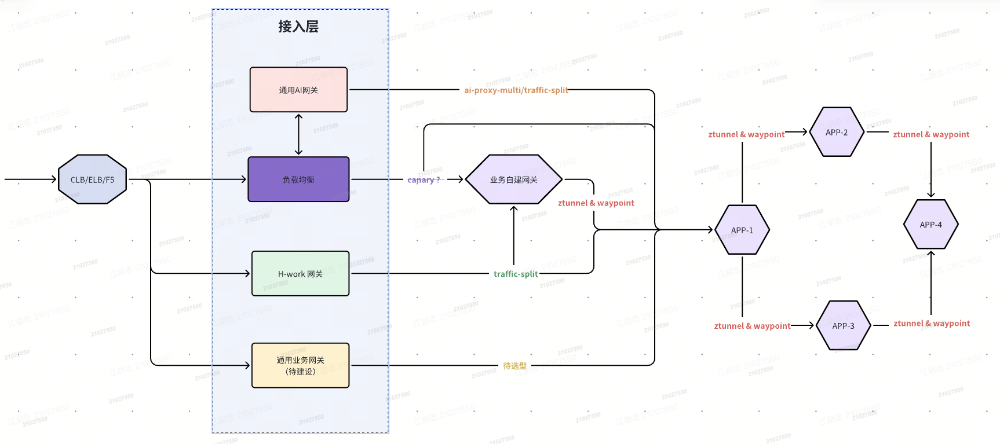
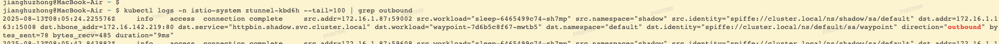

前言
目前平台主要基于Kubernetes的架构进行产品演进，为实现全链路灰度，降低版本发布的风险，计划从两个方向来调研灰度的能力：
入口网关，目前主要有Ingress Nginx、API7/Apisix等自建入口网关。
服务网格，采用Istio来实现服务之间访问流量的灰度。
Istio于1.24首次推出Istio Ambient的版本，Ambient以其简洁的架构、完全与应用解耦、以较低的资源配置获得性能的提升和不亚于Sidecar的安全防护能力获得许多人的青睐。
Ambient or Sidecar
目前Istio官方同时支持两种网格使用模式：sidecar、ambient。sidecar功能强大，几乎可以满足你对流量的所有掌控需求，久经生产验证；ambient以其精妙的架构设计，解决许多sidecar模式下的生产落地问题，属于快速上升期。
| 网格模式 | 功能 | 应用耦合度 | 资源 | 性能 | 规则下发 | 其它 |
|---|---|---|---|---|---|---|
| Ambient | 受限，快速迭代 | 与应用无耦合，单独维护 | 少，可共享，通过弹性伸缩灵活控制 | 高，四层七层灵活启用，只经过一次七层代理 | 默认全部，需额外维护下发范围 | 支持多集群 |
| Sidecar | 完整 | 强绑定，应用需重启，并处理启动顺序问题 | 多，每个实例一份资源 | 低，经过两次七层代理 | 按分区或者是实例或者是服务，灵活配置 | 1.27推出多集群的alpha版本 |
基于应用耦合度和资源情况（目前平台上用户分区有资源配额）两个核心影响用户使用的问题，决定采用ambient模式，使用ambient就必须接受当前部分功能受限，同时使用K8s Gateway API这一同样功能受限却主流上升的API，放弃Istio CRD。
参考资料
方案
部署
Istio官方只提供了最近4-5个K8s版本的支持，参考Istio / 版本支持。考虑到目前平台除几个新建的K8s集群版本较新，主流的版本还是1.22及以上。因此计划在1.22的版本中部署最新版本的Istio，测试所使用能力的兼容性。
目前Istio原有的Operator已废弃不用，新提供的Sail Operator也才刚刚GA，因此依然采用helm部署配合Argocd来安装和升级Istio。主要的helm包如下：
istio/base
主要负责Istio CRD的安装，以及一些webhook的配置。
Gateway API CRD
主要安装Gateway API的CRD
istio/istiod
istio控制面
istio/ztunnel
四层代理。
istio/cni
负责将打通加入网格Pod和ztunnel的流量重定向。
目前，Istio已经发布1.27，本文使用的是Istio 1.26.2。

经初步测试，1.26.2的Istio在1.22的K8s集群部署基本无问题，主要存在以下两个问题：
Gateway API CRD无法正常安装，部分字段在低版本K8s中不兼容，可通过kubectl apply –validate=falsel来忽略不兼容的字段。
Istiod中Watch了autoscaling/v2的HPA，低版本K8s中不存在这个资源组，会报List的错误。
功能
完成Istio 1.26.2的部署后，在测试集群上，验证相关Istio的能力，重点是灰度发布的功能。平台整体流量链路如下图。

入口网关（接入层）
Ingress Nginx
Ingress Nginx提供了canary的注解来实现灰度发布。目前平台的版本停留在1.1.3，经测试，该方案不可用，ingress 的 canary功能非常不稳定，官方也无意继续维护下去，转向了Gateway API的开发。hostNetwork Pod无论是sidecar模式还是ambient模式均无法使用网格能力，目前暂无好的办法，在ingress nginx上进行灰度发布。因此必须将Ingress Nginx上的规则迁移或者转发至其它支持灰度发布的入口网关上。
1 | # 需要两个Ingress才可以实现两个版本的canary，这里只给出了定义灰度规则的Ingress。 |
参考资料
API7&Apisix
使用traffic-split进行灰度发布，灰度规则指定的上游，目前不支持服务发现，因此无法到Pod实例，无法支持会话保持的能力。
1 | // 按比例灰度 |
Istio Ingress
分属Istio的整体方案之一，可以用一套Gateway API的规则定义，同时挂载到入口网关和waypoint上，可参考服务网格中的yaml示例。
服务网格
使用Gateway API的资源对象定义灰度发布的规则。
1 | # 按比例灰度 |
流量劫持
环境说明
为解决用户分区配额的问题，需要跨分区使用waypoint。因此waypoint部署在default分区，测试应用sleep和httpbin分别部署在shadow分区。与Istio启用ambient相关的标签和资源对象定义如下。
1 | # shadow分区启用ambient和waypoint |
完成如上配置后，部署在shadow分区的sleep和httpbin的应用默认启用了ambient，并使用waypoint代理流量。
istioctl proxy-status 查看xDS的下发情况。
istioctl proxy-config 查看waypoint的规则定义情况，更喜欢istioctl dashboard envoy通过ui来查看完整的配置。
istioctl ztunnel-config查看ztunnel的规则定义情况，同样可以用istioctl dashboard envoy通过ui来查看完整的配置。
可通过设置waypoint的日志级别来查看waypoint代理请求的情况，ztunnel可通过过滤inbound和outbound来查看流量代理情况。下面以sleep访问httpbin为例，分析流量的劫持。在sleep应用中通过curl http://httpbin/get访问httpbin应用，会发生如下情况：
在sleep的网络命名空间中，将sleep的出口流量透明代理到本节点ztunnel。
这里在sleep应用实例加入网格的时候，有两个关键的处理点：
（1）ztunnel需要在sleep的命名空间中存在监听的socket，这个是由istio cni监听实例加入网格，通知ztunnel通过Linux 底层socket创建接口处理的。
（2）istio-cni在sleep实例的网络命名空间，写入iptable规则，将入口流量非HBONE（port=15008）的TCP流量重定向到15006；将出口流量重定向到15001。
这里HBONE流量一般是ztunnel或者是waypoint发过来的，如果在网格外直接访问网格内的Pod，就不是HBONE。
本节点的ztunnel根据当前加入网格的Service的转发规则，将访问httpbin的流量通过HBONE透明代理到waypoint。

只要开启了waypoint，所有网格内的Service访问，都会经过waypoint，即使未定义Route规则，waypoint会默认加一条/*的转发。
如果使用了Route定义规则，会根据实际的规则调整waypoint的转发。
waypoint接收到ztunnel代理过来的流量，根据路由匹配规则，选择后端，并使用HBONE发往对应选择的Pod IP。再次被目标Pod网络命名空间中ztunnel的socket端口（15001，具体iptables规则参见1）捕获并处理，随后发给Pod中实际的应用端口（这里httpbin是80端口）。
参考资料
Istio / Ztunnel traffic redirection
AI代理
Istio在1.27的版本中推出了AI推理模型服务的代理实现。通过 K8s Gateway API Inference Extension 来实现对推理模型的定制化处理，感知推理模型服务的负载、队列、缓存和LoRA（ Low-Rank Adaptation）加载等情况，实现对AI代理的精细化管理。
其本质上借助了Envoy的扩展机制，通过一个Endpoint Picker根据具体AI路由的策略（InferenceModel & InferencePool），感知AI推理模型服务的状态来选择合适的后端处理AI流量。此方案目前尚显稚嫩，但需重点关注，作为AI网关的备选技术方案。
参考资料
Istio / Bringing AI-Aware Traffic Management to Istio: Gateway API Inference Extension Support